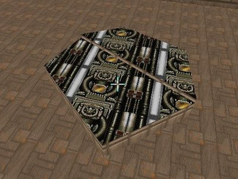
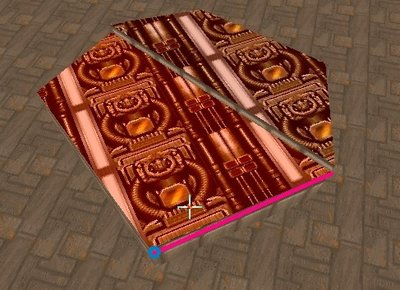
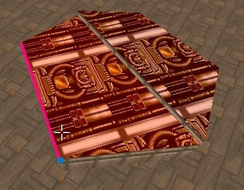
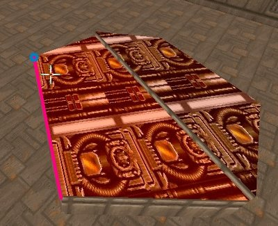
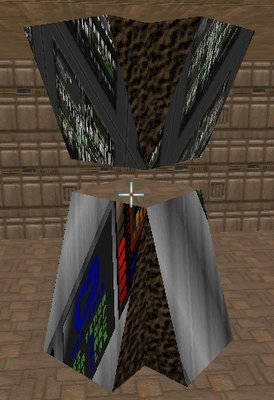
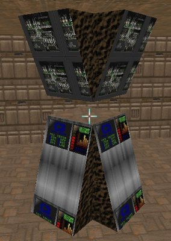

"Auto Align Textures" actions work on floors and ceilings. It works like so:
- a linedef closest to the 3D cursor position is picked from the highlighted sector.
- the linedef's start or end vertex is chosen based on distance to the 3D cursor as a start point for texture offsets.
- all selected floors/ceilings are aligned to that linedef if their texture matches one of the highlighted floor/ceiling.
- the vertical and horizontal texture scale is copied from the highlighted floor/ceiling to the selected floors/ceilings.
| Before: | After (1): |
|  |  |
| After (2): | After (3): |
|  |  |
You can also align floors and ceilings to selected linedefs in the Linedefs mode by using "Align Ceiling Texture to Back Side", "Align Ceiling Texture to Front Side", "Align Floor Texture to Back Side" and "Align Floor Texture to Front Side" actions, available in the Linedefs -> Align Textures menu.
"Auto Align Textures" actions work on slopes. Textures are aligned to the line with "Plane align (slope)" action (181).
| Before: | After: |
|  |  |